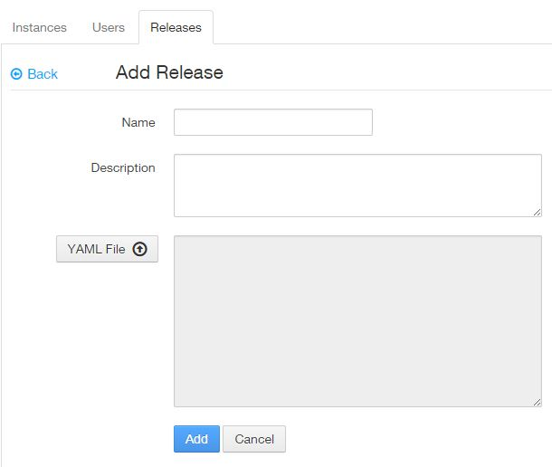

Managing Releases
What is a Release?
Releases are bundles of artifacts that are to be deployed to an instance together. To prevent issues with knowing what is actually deployed, once a release is created, it is immutable. A release can be used across any number of instances.
Who can perform this function?
Any of the roles below:
- Solution Center Administrator
- Solution Center Company Administrator
- Solution Center Solution Administrator
- Solution Center Instance Administrator
Create the release definition
The release definition can be configured using a yaml file that defines:
- the location of your maven repository
- the repository Id
- authentication to the repository (this is optional)
- list of deployment artifacts using GAV notation
See the example below:
repository:
location: nexus.covisintrnd.com:8081/nexus
repo-id: covs-release
skip-ssl: true #optional default - false
authentication:
username: admin
password: start123
webapps: #specify all wars as a sequence of GAV Coordinates this would go into tomcat\webapps folder
- g: com.yourGroup
a: your-Artifact
v: your-Version
- g: com.yourGroup
a: your-nextArtifact
v: your-nextVersion
Create a release
Steps:
- Click the Solutions tab.
- On the left panel of the Solution Center, click Solutions. A list of all the solutions that have access to the solution center will be displayed.
- Select your solution by clicking on the solution name.
- Click the Releases tab. The history of releases will be displayed if you have any previous releases.
- Click Add Release to create a new release. 
- Provide a friendly name for the release in the field Name.
- Enter the release description in the field Description.
- Attach a YAML file.
- Click the Add button to add the release to your solution.

Retrieve the manifest file for a release
Steps:
- Click the Solutions tab.
- On the left panel of the Solution Center, click Solutions. A list of all the solutions that have access to the solution center will be displayed.
- Select your solution by clicking on the solution name.
- Click the Releases tab. The history of releases will be displayed if you have any previous releases.
- Click on the down arrow next to the desired release name to download the manifest.yaml file.